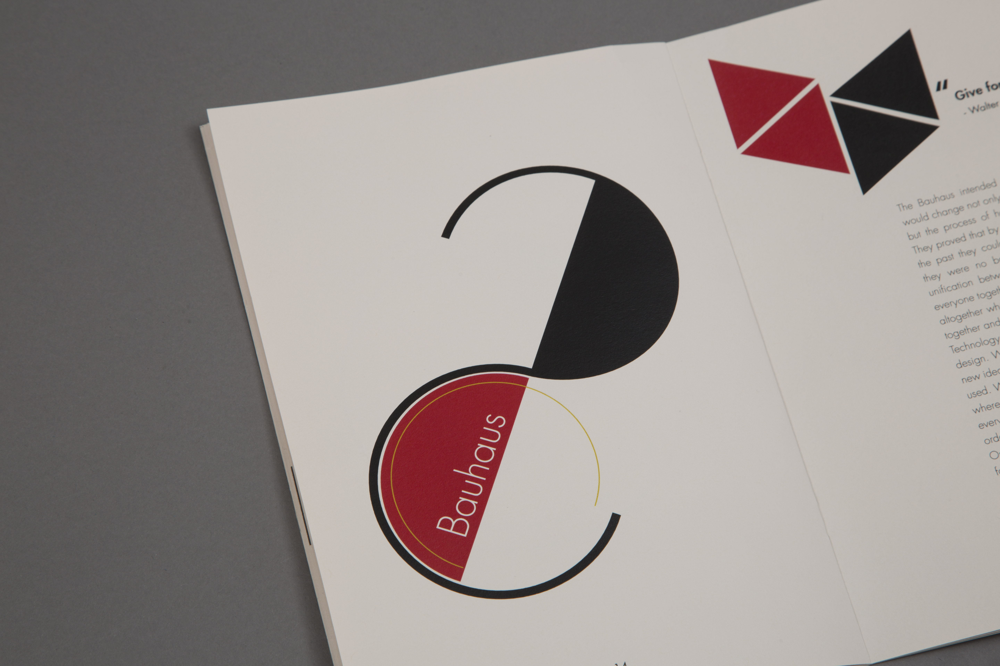
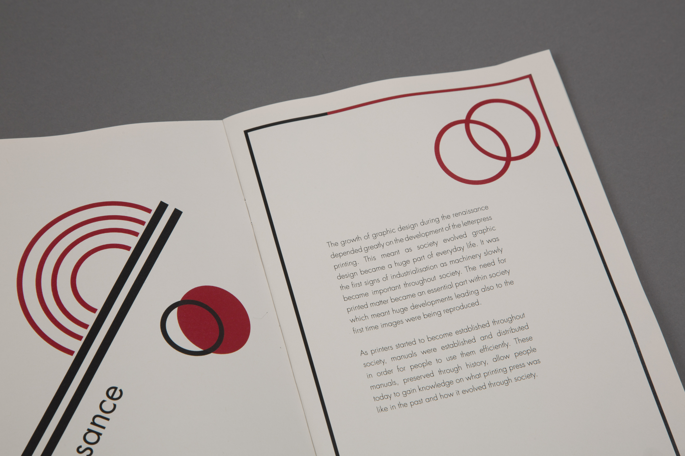

Showcasing months of notes of the many subjects detailed in a theory class, this publication looks at some of the most influential themes in deisgn history. Using a running htme ethroughout of Bauhaus, I used geometric shapes to design each page differently.

